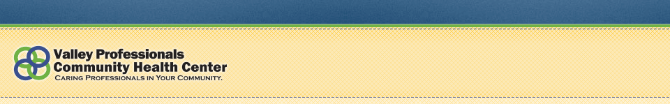

Telemedicine Health Services
Telemedicine
For the convenience our patients, Valley Professionals Community Health Center offers Telemedicine health services at its Clinton and Cayuga, Indiana locations.
Telemedicine is the use of video conferencing to enable healthcare providers at a different location, to provide health care treatment to you and/or consult with you and your healthcare provider about your health care options and decisions. Telemedicine consultations are not the same as direct patient/health care provider visits, as you will not be in the same location as the consulting provider. Telemedicine allows Valley Professionals Community Health Center to provide services to you that may otherwise require you to travel long distances. Your participation in any telemedicine consultation is completely voluntary.
Behavioral health and cardiology telemedicine services are currently available for health center patients. Over the past year, VPCHC has successfully included a live-videoconferencing program to their services, to provide patients with chronic disease management education, tele-psychology, and social service referrals through Healthy Families Indiana.
VPCHC has partnered with Union Hospital’s Respiratory Therapy and Center for Diabetes Education to provide education to patients suffering from chronic conditions of asthma and diabetes. This partnership was created to provide patients with the necessary skills and knowledge to better manage their condition and overall health. Telemedicine sessions with patients include topics such as insulin administration instruction, blood glucose monitoring, food label interpretation, health meal planning, medication compliance, proper rescue inhaler use and smoking cessation.
In November 2010, VPCHC was awarded a Special Exemplary Project Award for their Telemedicine Program, at the annual Indiana Primary Health Care Association Conference held in Indianapolis. Only two health centers in the state were recognized for this service.
Telecardiology
In 2011, Union Hospital’s Richard G. Lugar Center for Rural Health, a national leader in the provision of telemedicine services, recently took steps to bring patients a state-of-the art program designed to provide cardiology care to residents living in rural Parke and Vermillion counties.
Utilizing a grant from HRSA’s Office for the Advancement of Telehealth (OAT), the Lugar Center partnered with VPCHC’s Cayuga Clinic and Providence Medical Group Cardiology to establish the program.
Upon patient arrival, VPCHC staff complete a simple checklist and enter the patient’s history and other key data points into the patient’s electronic medical record, which is then transmitted to the cardiologist. After transmitting the information, the patient is connected to the cardiologist through a live, video interaction. Throughout the interaction the cardiologist is able to listen to the patient’s heart tones and breathe sounds, and provide treatment recommendations and orders for the patient after the examination.
To obtain more information or to enroll in this program, please call one of our health center locations: Clinton (765) 828-1003 or Cayuga (765) 492-9042.
Telemedicine consent/enrollment form (PDF)